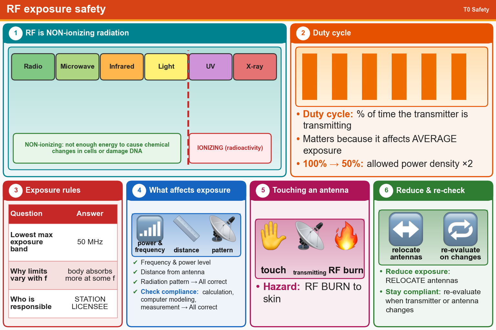

💡 RF is non-ionizing. Duty cycle affects average exposure. The station licensee is responsible.
📚 Key words
- Non-ionizing radiation
- Radio waves. Not enough energy to damage DNA, unlike X-rays or radioactivity (ionizing).
- RF exposure
- How much radio energy reaches a person. Depends on frequency, power, distance and antenna pattern.
- Duty cycle
- Percent of time a transmitter is transmitting. 50% duty cycle = twice the allowed power density.
- MPE
- Maximum Permissible Exposure. Lowest around 50 MHz, because the body absorbs more at some frequencies.
- Licensee
- The station owner, responsible for keeping people safe from RF.
- Evaluation
- Check by calculation (FCC OET Bulletin 65 or computer modeling) or measurement. Re-check after any change.
- RF burn
- Skin burn from touching an antenna while transmitting.
Press Check on any question to see if you're right (it won't show the answer), or Grade at the bottom to grade the whole page.
T0C01
What type of radiation are radio signals?
✘A.Alpha radiation
✔B.Non-ionizing radiation
✘C.Ionizing radiation
✘D.Gamma radiation
T0C12
How does RF radiation differ from ionizing radiation (radioactivity)?
✘A.RF radiation is limited in range to a few feet
✔B.RF radiation does not have sufficient energy to cause chemical changes in cells and damage DNA
✘C.RF radiation can only be detected with an RF dosimeter
✘D.RF radiation is perfectly safe
T0C11
What is the definition of duty cycle during the averaging time for RF exposure?
✔A.The percentage of time that a transmitter is transmitting
✘B.The percentage of time that a transmitter is not transmitting
✘C.The difference between the lowest and highest power output of a transmitter
✘D.The difference between the PEP and the average power output of a transmitter
T0C10
Why is duty cycle one of the factors used to determine safe RF radiation exposure levels?
✘A.It takes into account the antenna feed line loss
✔B.It affects the average exposure to radiation
✘C.It takes into account the thermal effects of the final amplifier
✘D.It affects the peak exposure to radiation
T0C03
How does the allowable power density for RF safety change if duty cycle changes from 100 percent to 50 percent?
✘A.There is no adjustment allowed for lower duty cycle
✘B.It increases by a factor of 3
✔C.It increases by a factor of 2
✘D.It decreases by 50 percent
T0C02
Which of the following bands has the lowest maximum permissible exposure for RF safety?
✘A.440 MHz
✘B.1296 MHz
✘C.3.5 MHz
✔D.50 MHz
T0C05
Why do exposure limits vary with frequency?
✘A.Lower frequency RF fields have more energy than higher frequency fields
✔B.The human body absorbs more RF energy at some frequencies than at others
✘C.Higher frequency RF fields are transient in nature
✘D.Lower frequency RF fields do not penetrate the human body
T0C13
Who is responsible for ensuring that no person is exposed to RF energy above the FCC exposure limits?
✔A.The station licensee
✘B.The FCC
✘C.The local zoning board
✘D.Anyone who is near an antenna
T0C04
What factors affect the RF exposure of people near an amateur station antenna?
✘A.Distance from the antenna to a person
✘B.Radiation pattern of the antenna
✘C.Frequency and power level of the RF field
✔D.All these choices are correct
T0C06
Which of the following is an acceptable method to determine whether your station complies with FCC RF exposure regulations?
✘A.By calculation based on computer modeling
✘B.By measurement of field strength using calibrated equipment
✘C.By calculation based on FCC OET Bulletin 65
✔D.All these choices are correct
T0C07
What hazard is created by touching an antenna during a transmission?
✘A.Exposure to ionizing radiation
✘B.Electrocution
✔C.RF burn to skin
✘D.All these choices are correct
T0C08
Which of the following actions can reduce exposure to RF radiation?
✘A.Increase the duty cycle
✘B.Relocate the transmitter
✔C.Relocate antennas
✘D.All these choices are correct
T0C09
How can you make sure your station stays in compliance with RF safety regulations?
✘A.By informing the FCC of any changes made in your station
✔B.By re-evaluating the station whenever an item in the transmitter or antenna system is changed
✘C.By making sure your antennas have low SWR
✘D.By using only Underwriter Laboratories approved transmitting equipment